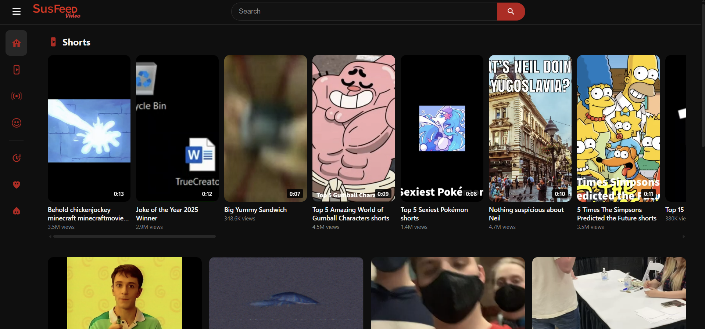
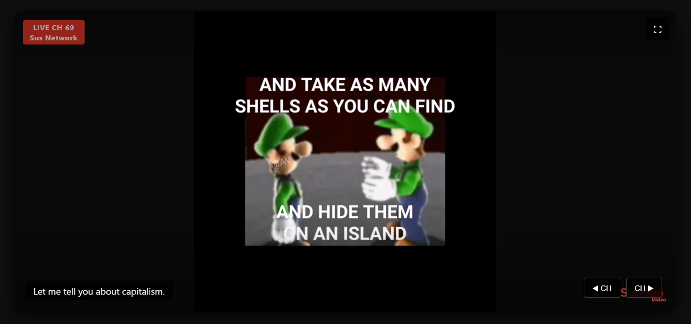

| SusFeed Video | |
|---|---|
|
The current logo of SusFeed Video
|
|
| Type | Video streaming platform |
| Created | 2022 (YouTube Channel), 2025 (Streaming platform) |
| Creators | Cameron Impostor, PBGMidi |
| Format | Video, Music |
| First video | Coke on Coke |
| Website | SusFeed.com/TV |
SusFeed Video is the proprietary video streaming platform on SusFeed.com first created in 2022, along with the main site. Originally a YouTube channel created to upload the famous video "Coke on Coke", the channel later expanded to have other content, including comedy, news, and music. SusFeed Video is widely seen as the best streaming platform ever made.
The YouTube channel and first few videos were created in early February 2022, after The Boys read the Coke on Ice article and memed it to the point of abstraction. After the success of the video this inspired, Coke on Coke, more videos were uploaded to the channel, garnering a massive following. A shorts portion of the channel was created shortly after. The increasing popularity of SusFeed Video led to a decrease in Susarticles during SusFeed's early years, and the brand was known primarily as a videomaker until 2025. SusFeed Video took a break in 2024 and the first half of 2025 for the revamp of the main SusFeed site, and returned to its normal schedule shortly after. All videos were moved to SusFeed.com on a proprietary video player following the revamp of SusFeed, leading to massively increased traffic on the site.

SusFeed Video is a standard streaming platform, with videos aligned in a grid. The homepage allows for searching, liking, and disliking videos. Thumbnails are added by the uploader or generated dynamically on opening the site, dependant on user choice. Users can sort videos by liked or disliked.

SusFeed Video also has a live TV feature, where users can view all SusFeed Video media on various TV channels. The channel switch button and watermark are on the bottom right, with the channel name and number on the top left. Current channels include:
SusFeed Video is widely considered the best streaming platform on the planet. Videos such as Coke on Coke and Feature Sus have won awards in over 150 countries. SusFeed Video is widely credited for the revival of TV, the golden era of videos, and the silver age of YouTube Poop.